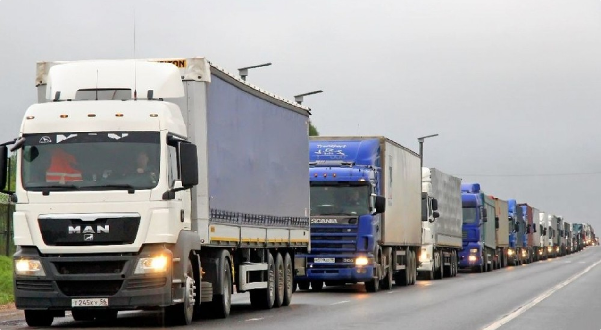

Кыргызстан, 720017, г. Бишкек, ул. Исанова, 42
kg
ru
en
Кыргызстан, 720017, г. Бишкек, ул. Исанова, 42
По фактам выявленных нарушений, а также за неправомерные действия инспекторов ПТК при выполнении ими своих функциональных обязанностей Департаментом автомобильного, водного транспорта и весогабаритного контроля при МТК КР своевременно принимаются меры. За 2021год были освобождены от занимаемых должностей 21 инспекторов ПТК, на 3-х инспекторов возбуждены уголовные дела правоохранительными органами.
Следует отметить, что время от времени фиксируется неисправность электронных табло по техническим причинам в отдельных Пунктах транспортного контроля. На устранение их требуется дополнительные финансовые средства и Министерством предпренмаюся необходимые меры по обеспечению бесперебойной работы информационной системы, в том числе электронных табло в пунктах транспортного контроля.
В целях исключения коррупционных действий инспекторов и минимизации участия человеческого фактора при осуществлении весогабаритного контроля министерством принято решение о внедрении полной автоматизации весогабаритного контроля с использованием современных информационных систем. В настоящее время министерством проводится необходимая работа по автоматизации весогабаритного контроля в рамках государственно-частного партнерства (аутсорсинг) и соответственно разработано техническое задание и технико-экономическое обоснование. Реализация этого проекта позволит искоренению коррупционных проявлений и обеспечить сохранность автомобильных дорог с использованием современных технологий без участия инспекторов на пунктах транспортного контроля.
